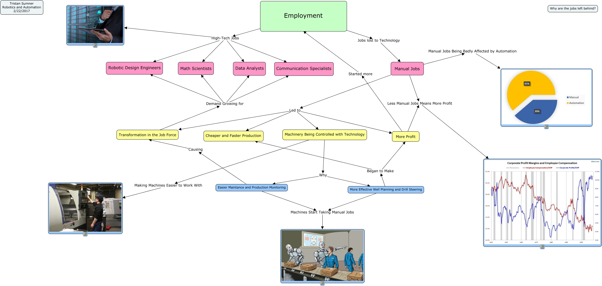

WARNING:
JavaScript is turned OFF. None of the links on this concept map will
work until it is reactivated.
If you need help turning JavaScript On, click here.
This Concept Map, created with IHMC CmapTools, has information related to: Employment, Employment High-Tech Jobs, Manual Jobs Led to More Profit, Manual Jobs Led to Transformation in the Job Force, Machinery Being Controlled with Technology Making Machines Easier to Work With, Manual Jobs Less Manual Jobs Means More Profit, Transformation in the Job Force Demand Growing for Robotic Design Engineers, Employment High-Tech Jobs Communication Specialists, Manual Jobs Led to Machinery Being Controlled with Technology, Employment High-Tech Jobs Data Analysts, Employment High-Tech Jobs Robotic Design Engineers, More Effective Well Planning and Drill Steering Began to Make More Profit, Easier Maintance and Production Monitoring Causing Transformation in the Job Force, More Profit Less Manual Jobs Means More Profit, Easier Maintance and Production Monitoring Machines Start Taking Manual Jobs, Machinery Being Controlled with Technology Why Easier Maintance and Production Monitoring, Transformation in the Job Force Demand Growing for Data Analysts, Employment Jobs lost to Technology Manual Jobs, Employment High-Tech Jobs Math Scientists, Machinery Being Controlled with Technology Why More Effective Well Planning and Drill Steering, More Profit Started more Employment
